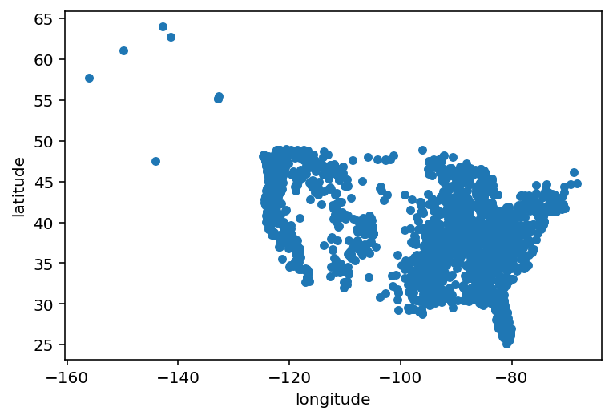
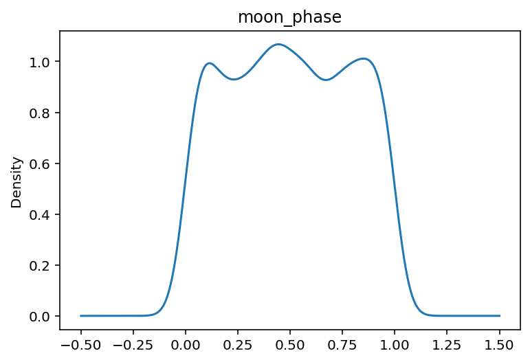
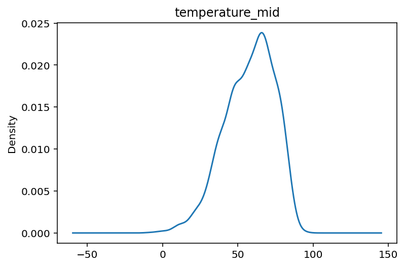
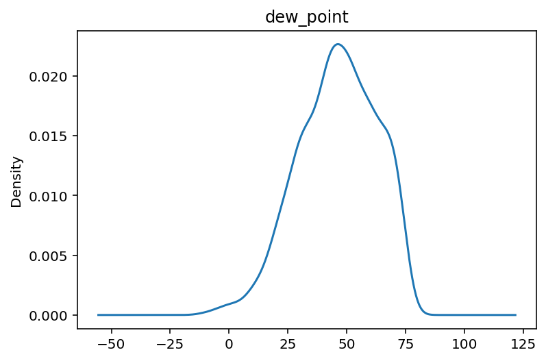
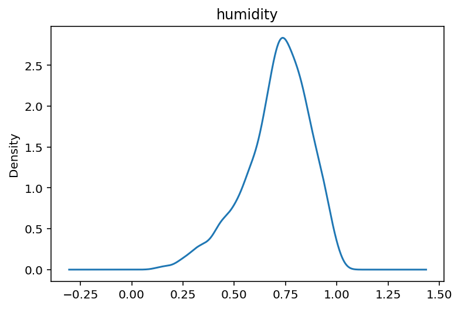

%matplotlib inline
raw_data = pd.read_csv("https://raw.githubusercontent.com/rfordatascience/tidytuesday/master/data/2022/2022-09-13/bigfoot.csv")
raw_data.head()
raw_data.shape(5021, 28)import pandas as pd
import numpy as np
from sklearn import model_selection
import matplotlib.pyplot as plt
from scipy.stats import gaussian_kde
from sklearn.ensemble import HistGradientBoostingClassifier, RandomForestClassifier
from sklearn.model_selection import cross_val_score
from sklearn.experimental import enable_iterative_imputer
from sklearn.impute import IterativeImputerFor this report, I’ll be working with Tidy Tuesday data about the important topic of reported Bigfoot sightings.
Now, I don’t think the evidence supports Bigfoot’s existence any more strongly than the Easter Bunny’s, but the data should be interesting regardless.
%matplotlib inline
raw_data = pd.read_csv("https://raw.githubusercontent.com/rfordatascience/tidytuesday/master/data/2022/2022-09-13/bigfoot.csv")
raw_data.head()
raw_data.shape(5021, 28)The Bigfoot Field Researchers Organization did their work well: each sighting comes with an impressive amount of metadata. Unfortunately, there are lots of NaN.
raw_data.columns
raw_data.isnull().sum()observed 38
location_details 760
county 0
state 0
season 0
title 976
latitude 976
longitude 976
date 976
number 0
classification 0
geohash 976
temperature_high 1683
temperature_mid 1835
temperature_low 1832
dew_point 1648
humidity 1648
cloud_cover 1937
moon_phase 1625
precip_intensity 2309
precip_probability 2311
precip_type 3298
pressure 2402
summary 1655
uv_index 1629
visibility 1972
wind_bearing 1634
wind_speed 1632
dtype: int64We may as well convert the date column to the proper data type.
raw_data["date"] = pd.to_datetime(raw_data["date"])We will predict the region of reported sightings from other variables.
The “classification” column refers to the plausibility of the sighting, with “C” denoting second- or third-hand reports. (See https://www.bfro.net/GDB/classify.asp)
y = raw_data["state"]
X = raw_data
del raw_data["state"]
X_train, X_test, y_train, y_test = model_selection.train_test_split(X, y, test_size = .25, random_state = 12345)Some states have only a few observations (what is Bigfoot doing in Delaware?), which will make prediction more difficult. As we’d expect, most come from the Pacific Northwest.
y_train.value_counts()Washington 447
California 304
Florida 235
Ohio 232
Oregon 197
Illinois 183
Texas 163
Michigan 155
Missouri 120
Georgia 89
Pennsylvania 89
Colorado 87
Kentucky 86
Tennessee 80
New York 79
Arkansas 78
Oklahoma 78
Idaho 75
Alabama 70
West Virginia 69
Arizona 69
Wisconsin 67
North Carolina 65
Indiana 64
Virginia 60
New Jersey 59
Minnesota 48
Utah 46
Iowa 43
Montana 38
Kansas 33
Louisiana 32
New Mexico 27
South Carolina 27
Massachusetts 24
Maryland 24
Wyoming 19
Mississippi 15
Alaska 13
Connecticut 12
Maine 12
South Dakota 11
Nebraska 11
Vermont 8
New Hampshire 8
Nevada 5
North Dakota 4
Delaware 3
Rhode Island 2
Name: state, dtype: int64Sightings span a long time range.
gaussian_kde(X_train.dropna()["date"].dt.year)<scipy.stats._kde.gaussian_kde at 0x7f6398d078e0>Does the distribution of classification types vary by state? Overall, the split is about even between A and B. In some states, class A reports (the most credible) predominate.
X_train["classification"].value_counts()
X_train["classification"].groupby([y_train]).value_counts()state classification
Alabama Class A 47
Class B 22
Class C 1
Alaska Class A 8
Class B 5
..
Wisconsin Class B 42
Class A 24
Class C 1
Wyoming Class A 12
Class B 7
Name: classification, Length: 112, dtype: int64A simple longitude-latitude plot shows a surprising number of sightings on the East Coast. Bigfoot is usually thought of escaping detection in the sparsely settled West. But if we assume all Bigfoot sightings are false or mistaken, we would expect sighting density to correlate with population. That would explain the eastern sightings.
# see
X_train.plot(x = "longitude", y = "latitude", kind = "scatter")
plt.show()
Several of the variables have normal-ish distributions.
def plot_density(var):
X_train[var].plot.kde()
plt.title(var)
plt.show()
for var in ["moon_phase", "temperature_mid", "dew_point", "humidity"]:
plot_density(var)



I recode states into regions, rather arbitrarily.
regions = {"mid_atlantic" : ["Delaware", "Maryland", "Virginia", "West Virginia", "New Jersey" , "New York", "Pennsylvania"],
"southeast" : ["South Carolina", "North Carolina", "Georgia", "Tennessee", "Kentucky", "Arkansas", "Louisiana", "Alabama" , "Mississippi", "Florida"],
"new_england" : ["Rhode Island", "Vermont", "New Hampshire", "Maine", "Connecticut", "Massachusetts"],
"midwest" : ["Ohio", "Illinois", "Missouri", "Indiana", "Oklahoma", "Wisconsin", "Nebraska", "Iowa", "Michigan"],
"central" : ["North Dakota", "South Dakota", "Colorado", "Wyoming", "Kansas", "Texas", "Minnesota", "Montana"],
"west" : ["Washington", "California", "Oregon", "Utah", "New Mexico", "Alaska", "Nevada", "Arizona", "Idaho"]
}
regions = {**{state: region for region, v in regions.items() for state in v}}
y_train = y_train.map(regions)
assert y_train.isnull().sum() == 0
classifier = HistGradientBoostingClassifier(learning_rate = .2, min_samples_leaf = 10, l2_regularization = .05, verbose =0, random_state = 12345)HistGradientBoostingClassifier(l2_regularization=0.05, learning_rate=0.2,
min_samples_leaf=10, random_state=12345)In a Jupyter environment, please rerun this cell to show the HTML representation or trust the notebook. HistGradientBoostingClassifier(l2_regularization=0.05, learning_rate=0.2,
min_samples_leaf=10, random_state=12345)I do a little feature engineering:
I create a temperature_mean variable averaging high, mid, and low temperatures Then I use multivariate NaN imputation for the many missing values in the chosen predictors.
X_train["temperature_mean"] = X_train[[ "temperature_high", "temperature_mid", "temperature_low" ]].sum(axis = 1) / 3
features =[ "humidity", "cloud_cover", "precip_intensity", "pressure", "visibility", "precip_probability", "wind_speed" ]
predictors = X_train[features]
imputer = IterativeImputer(max_iter=10, random_state=12345)
imputer.fit(predictors)
predictors = imputer.transform(predictors)array([[7.70000000e-01, 5.00000000e-01, 1.42552579e-02, ...,
5.66000000e+00, 4.01384913e-01, 3.13000000e+00],
[8.10000000e-01, 1.00000000e+00, 5.00000000e-04, ...,
5.12000000e+00, 1.00000000e+00, 4.56000000e+00],
[6.40000000e-01, 2.60000000e-01, 0.00000000e+00, ...,
1.00000000e+01, 0.00000000e+00, 2.34000000e+00],
...,
[4.70000000e-01, 2.00000000e-02, 0.00000000e+00, ...,
9.98000000e+00, 0.00000000e+00, 7.23000000e+00],
[2.40000000e-01, 1.00000000e-02, 0.00000000e+00, ...,
1.00000000e+01, 0.00000000e+00, 4.70000000e-01],
[5.70000000e-01, 1.00000000e-02, 0.00000000e+00, ...,
1.00000000e+01, 0.00000000e+00, 1.21100000e+01]])Now to fit and evaluate the model. Cross-validated scores aren’t very good; the level of accuracy obtained isn’t much better than the naive classifier (i.e., predicting the most likely class for each observation).
But the accuracy on the training data is about 80%, very good. That suggests overfitting, so I’ll try to make the model less flexible.
model = classifier.fit(predictors, y_train)
scores = cross_val_score(classifier, predictors, y_train, cv = 5)
y_train.value_counts() /len(y_train)
classifier.score(predictors, y_train)0.7928286852589641Let’s try again, this time scaling predictors and reducing flexibility. This improves scores a little.
scaled = np.apply_along_axis(lambda x: (x - np.mean(x))/ np.var(x), axis = 1, arr = predictors)
classifier = HistGradientBoostingClassifier(learning_rate = .03, max_leaf_nodes = 15, n_iter_no_change = 5, verbose = 0, random_state = 12345)
model = classifier.fit(predictors, y_train)
scores = cross_val_score(classifier, predictors, y_train, cv = 5)array([0.42363878, 0.40504648, 0.4249668 , 0.41035857, 0.40770252])A random forest fails to do better.
forest = RandomForestClassifier(n_estimators = 200, random_state = 12345, ccp_alpha = 0.1)
model = forest.fit(predictors, y_train)
scores = cross_val_score(forest, predictors, y_train, cv = 5)
scoresarray([0.31474104, 0.31341301, 0.31341301, 0.31474104, 0.31474104])Prediction time. The model again fares badly.
y_test = y_test.map(regions)
X_test["temperature_mean"] = X_test[[ "temperature_high", "temperature_mid", "temperature_low" ]].sum(axis = 1) / 3
X_test = X_test[features]
X_test = imputer.transform(X_test)
X_test= np.apply_along_axis(lambda x: (x - np.mean(x))/ np.var(x), axis = 1, arr = X_test)
predictions = classifier.predict(X_test)
classifier.score(X_test, y_test)0.31210191082802546